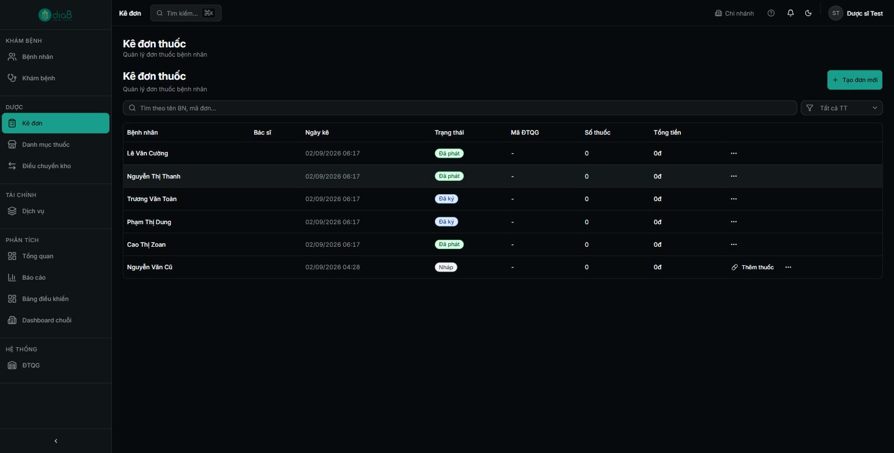
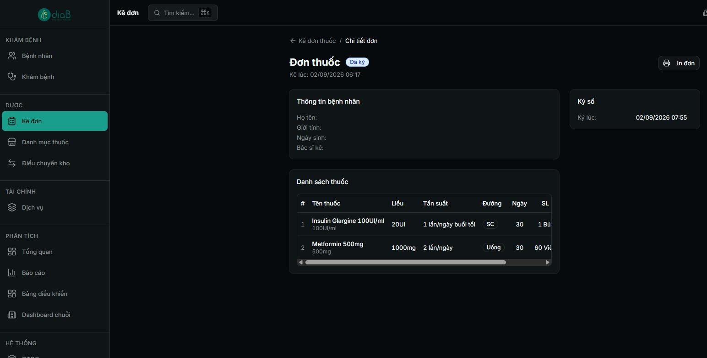
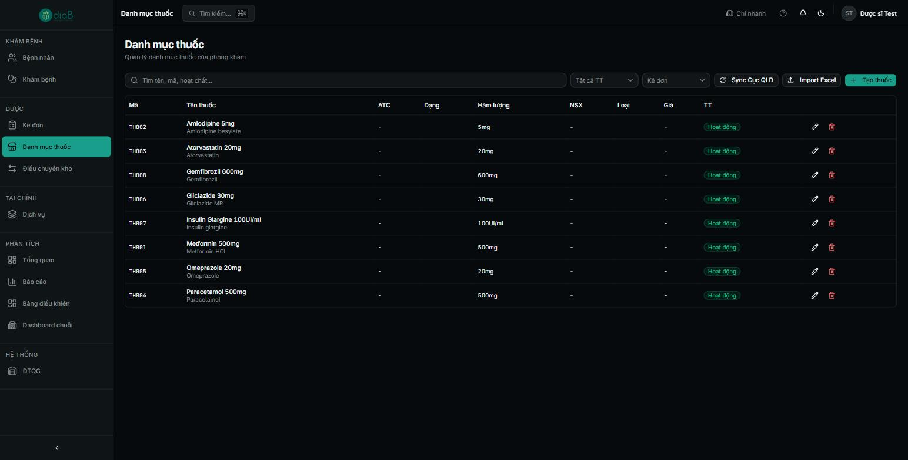
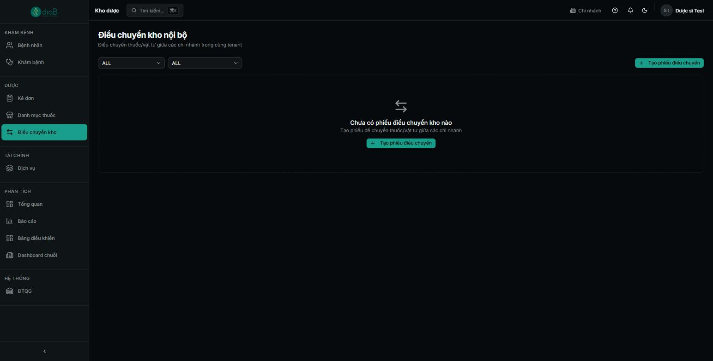

Vai trò: Dược sĩ
Hướng dẫn dược sĩ xem/xử lý đơn thuốc do bác sĩ kê, quản lý danh mục thuốc của phòng khám và tạo phiếu điều chuyển thuốc/vật tư giữa các chi nhánh.
Vai trò Dược sĩ trên Pro-Diab HIS hiện có 3 mục chức năng chính (nhóm DƯỢC ở thanh bên trái): Kê đơn (xem danh sách và chi tiết đơn thuốc do bác sĩ kê, gồm trạng thái Nháp/Đã ký/Đã phát), Danh mục thuốc (quản lý danh mục thuốc của phòng khám: mã, tên, hoạt chất, hàm lượng, trạng thái) và Điều chuyển kho (tạo phiếu điều chuyển thuốc/vật tư giữa các chi nhánh trong cùng tenant).
Lưu ý: Màn hình chưa có các thẻ Tồn kho theo lô/HSD, hàng chờ phát thuốc hay cảnh báo hết hạn riêng — nghiệp vụ nhập/xuất/tồn kho chi tiết theo lô hiện gắn liền với module Điều chuyển kho và Danh mục thuốc. Nếu phiên bản hệ thống bạn dùng có thêm các màn hình này, tài liệu sẽ được cập nhật.
| Vai trò | Tham gia bước nào | Quyền cần có |
|---|---|---|
| Dược sĩ | Xem đơn thuốc, quản lý danh mục thuốc, điều chuyển kho | Vai trò Dược sĩ (27 quyền) |
| Bác sĩ | Kê đơn (nguồn của danh sách đơn thuốc) | Vai trò Bác sĩ |
Vào menu Kê đơn. Bảng liệt kê đơn thuốc theo cột Bệnh nhân, Bác sĩ, Ngày kê, Trạng thái, Mã ĐTQG, Số thuốc, Tổng tiền. Trạng thái gồm: Nháp (bác sĩ đang kê), Đã ký (bác sĩ đã ký số, đơn hoàn chỉnh) và Đã phát (đã cấp phát cho bệnh nhân). Tìm theo tên bệnh nhân/mã đơn, lọc theo trạng thái. Bấm nút … ở cuối dòng → Xem chi tiết để mở đơn.

Mở một đơn để xem chi tiết: thông tin bệnh nhân, danh sách thuốc (Tên thuốc, Liều, Tần suất, Đường dùng, Ngày, Số lượng) và thông tin Ký số (thời điểm bác sĩ ký). Có thể In đơn để đưa cho bệnh nhân/lưu hồ sơ.

Vào menu Danh mục thuốc. Bảng liệt kê thuốc của phòng khám theo cột Mã, Tên thuốc, ATC, Dạng, Hàm lượng, NSX, Loại, Giá, TT (trạng thái). Có thể tìm theo tên/mã/hoạt chất, lọc theo trạng thái và loại (Kê đơn/OTC…). Nút Sync Cục QLD đồng bộ danh mục từ Cục Quản lý Dược, Import Excel nhập hàng loạt, Tạo thuốc thêm thuốc mới. Mỗi dòng có nút sửa/xoá.

Vào menu Điều chuyển kho. Màn hình quản lý các phiếu điều chuyển thuốc/vật tư giữa các chi nhánh trong cùng tenant. Khi chưa có phiếu nào, màn hình hiển thị trạng thái rỗng cùng nút + Tạo phiếu điều chuyển. Có thể lọc theo chi nhánh nguồn/đích (2 dropdown “ALL” ở đầu trang).

⚠️ Lưu ý: Phiếu điều chuyển có ngưỡng giá trị cần phê duyệt bổ sung (cấu hình tại Quản trị → Cấu hình hệ thống → mục Kho, tham số stock_transfer_approval_threshold).